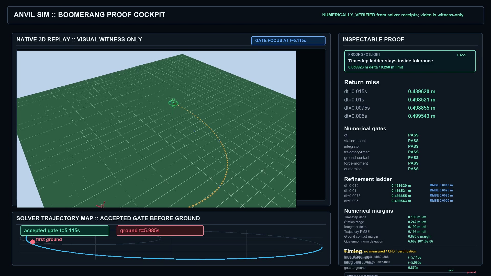

Anvil Sim
Anvil Sim takes CAD geometry through FEA, CFD, and thermal screening. An engineer can inspect the assumptions, solver output, limitations, and comparison evidence behind each result.
Explore Anvil SimLightbulb R&D
Anvil Sim is the current engineering software product. Rove is the staged hardware program. Enterprise OS keeps the objectives, implementation, tests, and decisions connected.
Projects
Anvil Sim turns CAD into reviewable simulation. Rove develops hardware capability in stages. Enterprise OS keeps long projects traceable.

Anvil Sim takes CAD geometry through FEA, CFD, and thermal screening. An engineer can inspect the assumptions, solver output, limitations, and comparison evidence behind each result.
Explore Anvil SimRove starts in simulation, advances through static structures and manipulation, and only adds motion and autonomy after sensing and failure evidence are in place.
Discuss robotics with meEnterprise OS connects the objective, acceptance cases, implementation, tests, review, and release decision for long projects. It makes completed work and unresolved blockers visible instead of relying on memory or status updates.
See how I deliver client workResearch
I want a traceable path from geometry and assumptions to solver evidence, limitations, and a decision.
I am testing how to stage capability, safety, failure states, and evidence without making claims too early.
I am testing whether clear specifications, verification, and durable project history can support work that usually needs a larger organization.
Range
I studied mathematics and computer science alongside mechanical engineering, then spent my career shipping production software. That combination is useful when a product touches models, data, hardware, or a technical domain the team does not already understand.
Client work stays focused on AI workflow automation, product engineering, and contract senior software engineering.